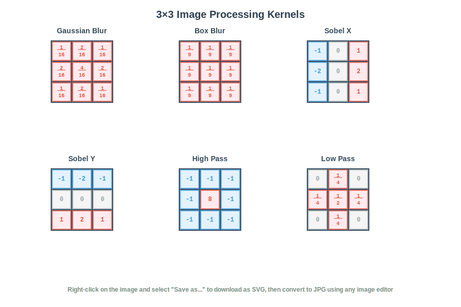
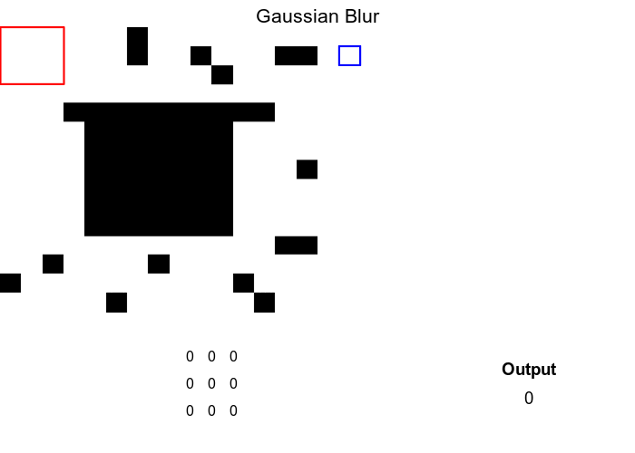
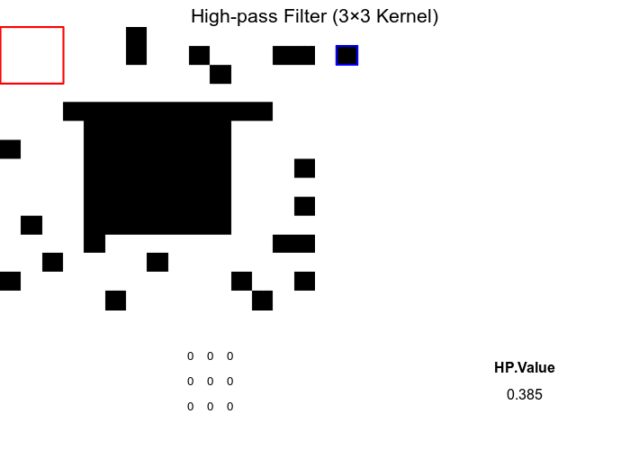
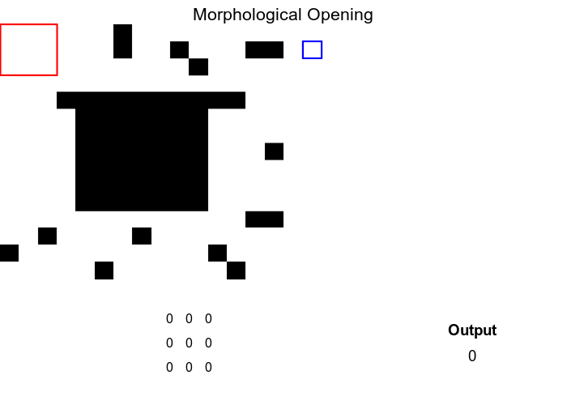

Working with Drone Imagery

Introduction
Drone imagery offers promising capabilities for urban planning, but its application warrants a measured and critical perspective. While drones can rapidly capture high-resolution spatial data, enabling planners to visualize land use, infrastructure, and environmental conditions with impressive detail, their use also raises concerns about data accuracy, privacy, and long-term integration. The quality of drone imagery can vary depending on weather, flight regulations, and operator expertise, potentially limiting its reliability for complex planning decisions. Moreover, the proliferation of aerial surveillance introduces ethical questions around consent and the monitoring of public and private spaces. Urban planners must also grapple with the challenge of incorporating drone data into existing workflows and regulatory frameworks, which are often not designed to accommodate such fast-evolving technologies. Nonetheless it is useful to figure out how to use them effectively.
When focusing specifically on drones, the types of data they can collect are largely determined by the onboard sensors they carry. Standard RGB cameras provide high-resolution visual imagery, useful for mapping, inspections, and photogrammetry. Multispectral sensors detect light across several bands, allowing analysis of vegetation health, water pollution, and urban heat islands—especially valuable in environmental planning. Thermal cameras capture infrared radiation, helping identify energy inefficiencies in buildings or monitor heat patterns in dense urban areas. LiDAR systems, which use laser pulses to measure distances, generate precise 3D models of terrain and infrastructure, even in areas with dense vegetation or poor lighting.
Within R, tools like FIELDimageR and uasim offer specialized functions for managing UAV imagery, including organizing flight data, converting formats, and preparing images for GIS integration. However, pre-processing and flight planning work is often done in other applications and R is used predominantly for processing the mosaiced raster datasets. In this tutorial we are focused on these later steps, especially on nadir/overhead images.
Multiple ways of thinking about rasters
Rasters are everywhere including pictures that may or may not have an external coordinate system, medical images (e.g. X-rays), astronomical images from telescopes, drawings etc. A raster is a grid of cells (or pixels), each holding a value that represents something about the space it covers. These values might describe elevation, temperature, color intensity, or even tissue density—depending on the domain. Some key features:
- Grid Structure: Rasters are organized into rows and columns, forming a rectangular data.
- Pixel Values: Each cell contains a numeric value—this could be brightness, elevation, or a class label.
- Resolution: The size of each pixel determines how detailed the raster is. Smaller pixels mean finer detail.
- Bands/Layers: Rasters can have multiple layers (bands), each representing different data types (e.g., RGB channels in images). Sometimes, these layers can be discretised time representing the same area at different timestamps.
- Spatial Context: Some rasters are tied to real-world coordinates (georeferenced), while others are not. When rasters are georeferenced within a particular coordinate system, all you need to know is the coordinates of the corners of the raster and the resolution to figure out the coordinates of every pixel in the raster.
Rasters can be thought of in a number of different ways. Chief among them are:
- They are similar to rectangular data frames where each pixel is a row and each band is a column. You can have other columns such as raster row position and raster column position.
- They are matrices where each cell is a pixel and each band is a matrix.
These two points are illustrated below.

- They are a regular network/graph, where each pixel is node and the edges are the connectivity among the pixels; i.e. neighboring pixels are connected to each other. Different connectivities (such as rook, 2-nd order queen) can be defined. This is illustrated below.
- Rasters are samples of a continuous surface that is discretised by the pixels.

Each of these ways of thinking may be useful for particular purposes. Sometimes it is helpful to think about rasters with their geographic locations. Sometimes what matters are internal relationships among the pixels.
Rasters in R
R offers a diverse ecosystem of packages for handling rasters, images, and multidimensional arrays across domains like biology, computer vision, remote sensing, and climate science.
Remote Sensing & Raster Visualization
These packages are designed for geospatial raster data, satellite imagery, and thematic mapping.
| Package | Description |
|---|---|
| terra | Modern package for handling spatial raster data efficiently. Supports cropping, resampling, and projection. |
| rasterVis | Enhances raster visualization with lattice-style graphics and thematic mapping tools. |
| stars | Handles spatiotemporal arrays and integrates with sf and tidyverse. Great for multi-band satellite data. |
| satellite | Tailored for processing satellite imagery, including atmospheric correction and vegetation indices. |
| RStoolbox | Toolbox for remote sensing analysis—supports PCA, supervised classification, and spectral indices. |
Environmental & Climate Raster Data
These packages specialize in large-scale environmental datasets, including climate models and ecological predictors.
| Package | Description |
|---|---|
| ncdf4 | Low-level interface for reading and writing NetCDF files. Ideal for custom extraction and manipulation. |
| RNetCDF | Alternative NetCDF interface with support for metadata and structured arrays. |
| stars | Also supports NetCDF and spatiotemporal raster data. Integrates well with tidy workflows. |
| geodata | Simplifies access to global environmental datasets like WorldClim, elevation, and land cover. |
| elevatr | Easy access to global elevation data from various sources (e.g., SRTM, AWS). |
| climate | Tools for analyzing climate data, including temperature and precipitation trends. |
| rnoaa | Interfaces with NOAA datasets including climate, weather, and ocean data. |
Biological & Medical Imaging
These packages are ideal for analyzing microscopy, medical scans, and structural biological data.
| Package | Description |
|---|---|
| EBImage | Bioconductor package for biological image analysis. Supports segmentation, object detection, and feature extraction. |
| mmand | Provides mathematical morphology operations (e.g., erosion, dilation, skeletonization) on multidimensional arrays. Great for structural analysis. |
| ANTsR | Advanced image registration and segmentation, especially for neuroimaging. Wraps the ANTs toolkit used in medical research. |
General Image Processing & Computer Vision
These tools support pixel-level manipulation, filtering, and high-level image editing.
| Package | Description |
|---|---|
| imager | Versatile for pixel-level operations, filters, edge detection, and convolution. Excellent for computer vision tasks. |
| magick | Wraps ImageMagick for high-level image editing—cropping, compositing, format conversion, and annotation. |
| OpenImageR | Offers image preprocessing, feature extraction, and similarity metrics. Useful in machine learning pipelines. |
| landscapemetrics | Focuses on landscape ecology metrics from raster data. Computes patch, class, and landscape-level statistics. |
| imagefx | Lightweight package for basic image effects like blur, sharpen, and color adjustments. |
Processing Drone Imagery in R
Let us use terra to process drone imagery in R. Download the required data and locate it into your InputData folder as is the general practise in this class. The following code reads a georeferenced orthomosaic image and visualizes the result.
library(terra)
# Adjust the path to where you have stored the data
here("tutorials_datasets", "drone_images", "2_mosaic", "20240801_Anafi_site4_transparent_mosaic_group1.tif") %>%
rast() -> drone_raster
drone_raster
# class : SpatRaster
# size : 11428, 7969, 4 (nrow, ncol, nlyr)
# resolution : 0.03962, 0.03962 (x, y)
# extent : 423103.3, 423419.1, 4012352, 4012805 (xmin, xmax, ymin, ymax)
# coord. ref. : WGS 84 / UTM zone 18N (EPSG:32618)
# source : 20240801_Anafi_site4_transparent_mosaic_group1.tif
# names : 2024080~roup1_1, 2024080~roup1_2, 2024080~roup1_3, 2024080~roup1_4
# min values : 0, 0, 0, 0
# max values : 255, 255, 255, 255
Note a few things about the raster:
- It has 4 bands. It is tempting to think that they are Red, Green, Blue and Near Infrared bands. However, we will see shortly that this is not the case. (Hint: try
summary) - The coordinate reference system is UTM zone 18N (EPSG:32618). Thus the units of the raster is in meters
- The resolution is about .039 meters (3.9 cm) in both X and Y directions.
- The extent of the raster is in UTM coordinates. The lower left corner is at (423103.3, 4012352) and the upper right corner is at (423419.1, 4012805). Thus the raster covers an area of about 316 m by 453 m. This is equivalent to 35 acres.
Let’s visualise each band separately.
par(mfrow = c(2, 2)) # Set up a 2x2 plotting layout
# Loop through and plot the first four bands
for (i in 1:4) {
plot(drone_raster[[i]],
main = paste("Band", i),
col = gray.colors(256))
}

Visualising this suggests that Band 4 is simply a mask that specifies which pixels are valid (non-NA). In this particular instance 255 refers to non-NA values. The other three bands are Red, Green and Blue bands. We can confirm this by plotting a RGB composite image using the plotRGB function.
plotRGB(drone_raster, r=1, g=2, b=3,
stretch="lin",
main="RGB Composite (1=R, 2=G, 3=B)")

It is useful to recognise that the values of the raster can be accessed using the [ operator. For example, the value of the pixel at row 1000 and column 500 for bands 1 and 2 can be accessed as follows.
drone_raster[1000, 500, 1:2]
# 20240801_Anafi_site4_transparent_mosaic_group1_1
# 1 96
# 20240801_Anafi_site4_transparent_mosaic_group1_2
# 1 125
Likewise, [[, or $ extracts the entire band as a Spatraster, as we have seen earlier.
drone_raster$`20240801_Anafi_site4_transparent_mosaic_group1_3`
# class : SpatRaster
# size : 11428, 7969, 1 (nrow, ncol, nlyr)
# resolution : 0.03962, 0.03962 (x, y)
# extent : 423103.3, 423419.1, 4012352, 4012805 (xmin, xmax, ymin, ymax)
# coord. ref. : WGS 84 / UTM zone 18N (EPSG:32618)
# source : 20240801_Anafi_site4_transparent_mosaic_group1.tif
# name : 20240801_Anafi_site4_transparent_mosaic_group1_3
# min value : 0
# max value : 255
drone_raster[[3]] %>%
plot()

Exercise
- What is the value of the pixel at row 1500 and column 800 for bands 1 and 3?
- Extract values for 50x50 pixels starting at row 1200 and column 400 for all three bands.
Raster Arithmetic
Raster arithmetic is a powerful technique for deriving new insights from existing raster data. By performing mathematical operations on raster layers, we can create indices that highlight specific features or conditions in the landscape. In this instance, it might be useful to think of raster layers as columns and the airthmetic is within each row, with airthmetic happening among the columns (much like most spreadsheet operations, or mutate from tidyverse).
For example,
$$ VARI = \frac{(G - R)}{ (G + R – B)} $$ is particularly good at isolating the vegetation signal by normalizing the Green-Red difference by the overall visible light reflectance.
vari <- (drone_raster[[2]] - drone_raster[[1]]) /
(drone_raster[[2]] + drone_raster[[1]] - drone_raster[[3]])
plot(vari, main="VARI Index", col=gray.colors(256))

Exercise
- Other indices that are useful for vegetation include
- Normalized band index (NBI). Each band is normalised by dividing with the sum of all three bands.
- Excess green index (ExG). $ 2G - R - B $
- Excess green minus excess red index (ExGR). $ 3G - 2.4R - B $
- Green leaf index (GLI). $ \frac{2G - R - B}{2G + R + B} $
Compute these indices. Visualise the results. Put them in a multilayered SpatRaster object. Which index do you think is best for identifying vegetation in this image? Why?
-
What happens when the denominator in these indices is 0? How does R handle this? How would you like it to be handled?
-
app,lappare useful and memory-safe functions for applying functions to each pixel across multiple layers. Explore these functions and see if you can use them to compute the indices above.
Colorspaces
A color space is a mathematical model for representing colors as a set of numerical values. While the most familiar color space, RGB (Red, Green, Blue), is an additive model that’s hardware-oriented, it’s not intuitive for humans to manipulate because changing one color channel can unpredictably alter both the hue and brightness.
Hue, which identifies the dominant color and is represented as an angle on a color wheel; Saturation, which denotes the purity or vividness of the color; and Intensity, which represents the overall brightness or luminance. Unlike HSV, which uses the maximum RGB value for its Value component, HSI’s Intensity component is often calculated as the average of the red, green, and blue values, making it a more direct measure of brightness.
set.RGB(drone_raster, 1:3, "rgb")
drone_raster_hsi <- colorize(drone_raster, to = "HSI")
plot(drone_raster_hsi[[1:3]], main=c("Hue", "Saturation", "Intensity"), col=gray.colors(256))

Identifying glint
Glint refers to the bright spots or reflections often seen in aerial imagery, particularly over water bodies or shiny surfaces. These reflections can obscure important details in the image and complicate analysis. Identifying and mitigating glint is crucial for accurate interpretation of drone imagery. In the above image, glint is obvious in various areas in the East and Southwest parts of the image. The glint obscures the submerged aquatic vegetation in these areas.
Let’s try a couple of approaches to identify glint in this image.
Areas of glint seem to have high intensity and low saturation. Lets apply some thresholds.
brightness_threshold <- quantile(values(drone_raster_hsi[[3]]), .95, na.rm = TRUE) # High brightness
saturation_threshold <- quantile(values(drone_raster_hsi[[3]]), 0.3, na.rm = TRUE) # Low saturation
glint_mask <- (drone_raster_hsi[[3]] > brightness_threshold) & (drone_raster_hsi[[2]] < saturation_threshold)
plot(glint_mask, main="Glint Mask (Brightness + Saturation)")

Use a relative difference between red and green to identify glint. This is similar to the Normalized Difference Water Index (NDWI) used in remote sensing to identify water bodies.
# Calculate normalized difference water index-like metric
ndwi <- (drone_raster[[2]] - drone_raster[[1]]) / (drone_raster[[1]] + drone_raster[[2]] + 0.001) # Add small value to avoid division by zero
ndwi_threshold <- quantile(values(ndwi), 0.7, na.rm = TRUE)
glint_mask2 <- (drone_raster_hsi[[3]] > brightness_threshold) & (ndwi > ndwi_threshold)
plot(glint_mask2, main="Glint Mask (NDWI + Intensity)")

Exercise
- use Raster arithmetic to substitute for logical arithmetic. In particular, think about how multiplication and addition by 1,0 work? Pay special attention to NAs.
- Experiment with different thresholds. How do you think they should be set?
It might useful to compare the original RGB values among the two glint masks. Note the use of the binary valued glint mask as a row index to extract the RGB values (1:3 columns) from the original raster.
library(cowplot)
rgb_values_glint1 <- as.data.frame(drone_raster)[as.vector(glint_mask), 1:3]
rgb_values_glint2 <- as.data.frame(drone_raster)[as.vector(glint_mask2), 1:3]
names(rgb_values_glint1) <- c("r", "g", "b")
names(rgb_values_glint2) <- c("r", "g", "b")
g_red <- ggplot(data = ) +
geom_density(aes(x=r, fill="Mask1"), data = rgb_values_glint1, , alpha=0.5) +
geom_density(aes(x=r, fill="Mask2"), data = rgb_values_glint2, alpha=0.5) +
xlim(0, 255)+
scale_fill_manual(name="Glint Mask", values=c(Mask1="yellow", Mask2="brown")) +
theme_minimal() +
theme(legend.position="none") +
xlab("Red")
g_green <- ggplot(data = ) +
geom_density(aes(x=g, fill="Mask1"), data = rgb_values_glint1, , alpha=0.5) +
geom_density(aes(x=g, fill="Mask2"), data = rgb_values_glint2, alpha=0.5) +
xlim(0, 255)+
scale_fill_manual(name="Glint Mask", values=c(Mask1="yellow", Mask2="brown")) +
theme_minimal() +
theme(legend.position="none") +
xlab("Green")
g_blue <- ggplot(data = ) +
geom_density(aes(x=b, fill="Mask1"), data = rgb_values_glint1, , alpha=0.5) +
geom_density(aes(x=b, fill="Mask2"), data = rgb_values_glint2, alpha=0.5) +
xlim(0, 255)+
scale_fill_manual(name="Glint Mask", values=c(Mask1="yellow", Mask2="brown")) +
theme_minimal() +
theme(legend.position="none") +
xlab("Blue")
g_legend <-
get_legend(
g_red + theme(legend.position = "right")
)
plot_grid(g_red, g_green, g_blue, g_legend, ncol=4, rel_widths = c(1,1,1,.2))

Exercise
- Instead of repeating the ggplot for each band, make a function that you can call multiple time and use to generate this graphic.
- How might you avoid the use of legends in this graphic? Is it wise?
- Figure out an easier wasy to generate this graphic using
pivot_longerandfacet_grid.
Convolutions & Moving Windows
Convolutions and moving window operations are fundamental techniques in raster and image processing that apply mathematical operations to each pixel based on its surrounding neighborhood. In these operations, a small matrix called a kernel, filter, or window is systematically moved across the entire raster, with the kernel’s center positioned over each target pixel. At each position, the kernel values are multiplied element-wise with the corresponding pixel values in the neighborhood, and these products are summed to produce a new value for the center pixel. This process enables a wide range of analytical capabilities, from simple smoothing and noise reduction using averaging kernels, to edge detection with gradient operators like Sobel or Laplacian filters, to more complex feature extraction and pattern recognition tasks. The size and values within the kernel determine the specific operation performed—for example, a 3×3 kernel filled with 1/9 values creates a mean filter for smoothing, while kernels with positive and negative values can highlight directional edges or enhance specific spatial frequencies. These operations form the mathematical foundation for many advanced techniques in computer vision, remote sensing, and spatial analysis, allowing meaningful information from spatial patterns and relationships within raster datasets to be extracted.

gaussian_kernel <- matrix(c(
1, 2, 1,
2, 4, 2,
1, 2, 1
), nrow = 3, ncol = 3, byrow = TRUE) / 16
smoothed_intensity <- focal(drone_raster_hsi[[3]], w = gaussian_kernel, fun = sum, na.rm = TRUE)
glint_mask_smooth <- (smoothed_intensity > brightness_threshold) & (drone_raster_hsi[[2]] < saturation_threshold)
plot(glint_mask_smooth , main="Glint Mask (Smoothed Gaussian + Intensity + Low Saturation) ")

Exercise
- Try other kernels and see what the output of the convolution is
- Explore the effect of changing the size of the kernel
- Moving window operations are very similar in concept to ‘rolling’ operations in time series. Explore the
rollapplyfunction from thezoopackage and see if can see parallels.
Morphological operations like erosion and dilation are specialized types of moving window operations that share the same fundamental mechanism as convolutions but operate on binary or grayscale images using set theory principles rather than arithmetic multiplication and summation. In morphological operations, a structural element (analogous to a convolution kernel) moves across the image, but instead of computing weighted sums, these operations apply logical rules based on the spatial relationship between the structural element and the underlying pixel values. Erosion shrinks or “erodes” bright regions by replacing the center pixel with the minimum value found within the structural element’s neighborhood—effectively, a pixel remains bright only if all pixels under the structural element are bright. Conversely, dilation expands bright regions by taking the maximum value in the neighborhood, causing bright areas to grow outward by the shape of the structural element. While convolutions use multiplication and addition to blend neighborhood information, morphological operations use min/max functions or set intersection/union operations, making them particularly effective for shape analysis, noise removal, and boundary extraction in binary images. Both approaches follow the same spatial scanning pattern and neighborhood-based processing philosophy, but morphological operations focus on preserving and manipulating the geometric structure of objects rather than smoothing or detecting gradients.
We can use these morphological operations to get a better sense of the glint mask by only including areas using focal functions in terra.
struct_elem <- matrix(1, nrow = 5, ncol =5)
glint_eroded <- focal(glint_mask_smooth, w = struct_elem , fun = function(x, ...) as.integer(min(x, na.rm = TRUE)), na.rm = TRUE)
glint_opened <- focal(glint_eroded, w = struct_elem , fun = function(x, ...) as.integer(max(x, na.rm = TRUE)), na.rm = TRUE)
plot(glint_opened, main="Cleaned Glint Mask (Opening)")

Exercise
- Try other morphological operations such as closing, dilation and erosion. How do they compare?
- Try other kernels such as cross, diamond, circle etc. How do they compare?
- Try other kernel sizes. How do they compare?
Conversion to vector
Sometimes, it might be helpful to convert these rasters into vectors for processing elsewhere.
glint_polygons <- as.polygons(glint_opened, dissolve=TRUE)
plot(glint_polygons)

You can save these as shapefiles, or as other rasters if you prefer
writeVector(glint_polygons, here("outputs", "glints"), filetype='ESRI Shapefile', insert=FALSE,
overwrite=FALSE, options="ENCODING=UTF-8")
writeRaster(glint_opened, here("outputs", 'glint.img'), datatype="INT1U") # Write out the raster in ERDAS Imagine file format, with the right data type (boolean).
Conclusion
In conclusion, basic raster analysis of drone imagery offers a practical framework for understanding urban environments. By processing high-resolution aerial data, analysts can identify spatial patterns such as land use, infrastructure density, and vegetation distribution. However, much of the analysis is about the art of managing large datasets, thinking through analytical frames and bringing to bear other data. We will touch upon these in other tutorials.
Nikhil Kaza
Professor
My research interests include urbanization patterns, local energy policy and equity